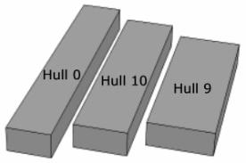
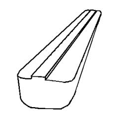
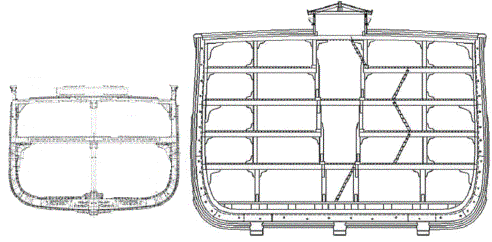
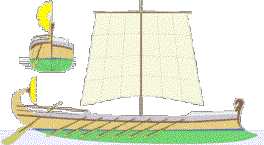
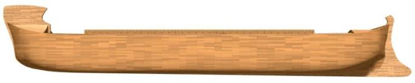
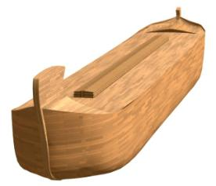
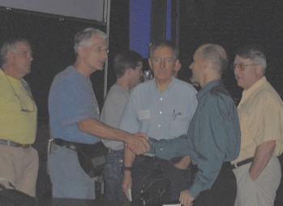

A summary of the presentation given at the Mega-Conference at Liberty University, July 20, 2005. The one hour talk included 95 Powerpoint slides, Flash animation and video. Presented by Tim Lovett B.E. (Sydney University), Dip. Ed. (UTS, Sydney).
Image AiG. Link to Mega-Conference.
Sept 08, 2005. Link to online presentation with all
images (without video files).
Frames or Full Screen
(Mouse click or Spacebar to get next slide)
All images © Tim Lovett unless otherwise stated.
It is an honor for me to present some recent research and investigations into how we think Noah’s Ark may have looked and behaved.
Some of this information is available on my website. As a mechanical engineer myself, this project has been assisted tremendously by the insight and guidance of two naval architects; (ship designers). The first is
Jim King who works for the US navy and has given valuable insights. The other naval architect is Dr Allen Magnuson. Over the last year Dr Magnuson and I have emailed literally hundreds of messages and drawings across the Pacific.To begin with, Noah’s Ark has NOT been found. We have no evidence of finding the Ark at this point in time.
Another common question is “Where did all the water go?” 70% of the surface of the earth is covered by water, with an average depth of around 4km. There is enough water to drown the entire globe to a depth of almost 3km if it were smoothed out. Aren’t you glad it’s bumpy?
The BBC claimed Noah’s Ark was “Almost as long as the Titanic”
This is easy to check. Most people take a cubit as 18 inches or one and a half feet, so 300 x 50 x 30 cubits is 450 x 75 x 45 feet. Converting to meters, there is about 2 cubits to the meter, giving 150m x 25m x 15m. Now the Titanic was 883 feet (270m) long, so Noah’s Ark was only about half the length of the Titanic. The BBC was clearly wrong.
I want to be convinced that we have done our very best to choose the MOST LIKELY cubit for Noah’s Ark. Potential cubits vary from about 17.5” to 24”. (44 to 61 cm).
It is very unlikely the cubit could have changed in the short time between Noah’s Ark and the Tower of Babel. The sudden dispersion should have sent it around the world, and nowhere more obvious than nearby where the infrastructure remained. So if we take a look at the early constructions in Egypt and Mesopotamia we find the 52.4cm (20.6”) Royal Egyptian Cubit, and the Nippur cubit of 51.9cm (20.41"). Other long cubits are found around the world, but nothing so well defined as what we see in Egypt.
In the ancient Near East, cubits generally fell into 2 categories – a long one (royal) and a short one (common). The longer cubit dominates ancient constructions, especially anything grand or religious. These longer cubits were surprising similar in length, pointing to a single origin like Babel.
So why is Noah’s Ark usually in the short cubit? Creationist authors have deliberately chosen a short cubit to show that even in the worst case Noah’s Ark is still huge. That was a good idea in 1961, when a huge ark was a novelty. But the short cubit is not always the best choice in every argument.
Consider these few simple arguments.
|
Conservative Positions Aplenty... |
|||
| Focus | Common Objection | Which Cubit? | Which Hull shape? |
| Capacity | Too small to fit animals | Smallest | Most streamlined |
| Stability | Capsize risk | Smallest | Least stable |
| Strength | Wood is too weak | Largest | Most block-like |
| Construction | Too difficult to make | Largest | Most complex |
| Seakeeping | Occupants thrown around | Smallest | Most block-like |
If we were to select a conservative ark design in answer to each of these arguments, we would have 5 different designs. Today, as we begin to focus in on the construction and performance of the vessel we have to look at many more factors than simply the amount of room on board. So I think its fair to present our definition of Noah’s Ark in terms of what is MOST LIKELY, not simply constrained by one particular issue.
A quick note about Tsunamis: Some claim the Ark could not survive the tsunamis generated by earthquake activity.
"If you are on a boat or ship and there is time, move your vessel to deeper water (at least 100 fathoms - 600ft or 182m)". Tsunami Safety Rules http://wcatwc.gov/safety.htm
In other words – tsunamis are not dangerous in deep water – you don’t even notice them. Remember the horrifying devastation of the Asian tsunami? This was the first time accurate wave measurements were taken by satellite for a serious tsunami in deep water. It was 2 feet high, and with a very long wavelength – imperceptible to ships.
What about the strength of Noah’s Ark?
A long hull rides better but must resist bending loads applied by the waves, alternatively bending it up and down in the middle.
This sort of issue been used by critics of the Ark, such as Australian humanist of the year Ian Plimer, who declared; “No vessel, let alone a highly unstable twisting leaking wooden ark 50% longer than the USS Wyoming could survive such conditions”. Sounds a bit like the BBC doesn’t it? “Experts say it would have broken apart”.
But what do experts really say?
Currently, the prime technical paper is Safety Investigation of Noah’s Ark in a Seaway, TJ. 8(1), 1994. It was written by a team of 9 research scientists (Hong et al.), all on staff at the world class ship research centre KRISO, Korean Research Institute of Ships and Ocean Engineering.
The methodology was uncomplicated - take the Biblical proportions and analyze what happens if they are modified. The Biblical Ark (300L x 50B x 30D) was compared to 12 arks of equal volume but modified by +/- 20% and +/- 50% in length, breadth or depth. Their conclusion was that the Ark could handle waves in excess of 30m.
The Hong study considered the roll stability of the Ark (capsize risk). The Biblical Ark has a breadth to depth ratio very similar to a modern cargo ship.
Take care however. Noah’s Ark is not the “most stable design you can get”. In fact, the Hong study shows this clearly. Nor can we say it is far more stable than any ship of today, since we don’t know where the centre of gravity is situated. Considering the density of Noah’s cargo, it is likely the center of gravity was within the normal range for a ship.
|
Safety index ranking (after Hong et al.) |
||||
| Desc | TSK Si | Struct Si | Roll Si | TSI Ranking |
| Pure seakeeping (worst) | 1 | 0 | 0 | 12,7,4,11,3,8,0,1,10,9,2,6,5 |
| Pure strength | 0 | 1 | 0 | 5,9,6,10,1,2,0,3,11,4,7,12,8 |
| Pure stability | 0 | 0 | 1 | 9,10,6,5,0,3,7,11,4,2,8,12,1 |
The Hong study tested these Ark variations in three competing aspects; Seakeeping (comfort), Strength (breaking in the middle), Stability (capsize). The Biblical Ark (hull 0) ranked about average in each. Of the 13 hulls it came; 7th in seakeeping, 6th in hull strength and 5th in roll stability.
But overall, how did it rate? In the last statement in the Korean study, these safety factors were weighted 2:2:1 respectively. Noah’s Ark ends up 3rd best, 2 other arks ahead of it (Hulls 9 and 10). By varying the weighting arrangement Noah’s Ark approached the top of the list, but was never the best.

A shorter hull is also easier to build, since it uses less wood to achieve the same internal volume.
So why would God design Noah’s Ark so long?
The previous article looked at the Korean study, which appears to favor a shorter ark design. We were left with the question: Why is Noah’s Ark so long?
There is one obvious answer to this question, but first we will investigate the claim that the Bible tells us that Noah’s Ark was a block shape.
The Korean study said; “Little is known about the shape and form of the Ark’s hull. However, several explorers have each claimed that they have discovered the remains of the Ark at some sites on Mt. Ararat.”

They are referring to accounts like that of George Hagopian, recorded around 1970, where he described visiting the ark in 1908 and 1910 as a young boy, describing it as very large and rectangular.
Others say the word “Ark” means box, therefore Noah’s Ark must be a block shape.
Another argument for a rectangular prism is that Genesis 6:15 specifies 3 dimensions; Length, Breadth and Height. But ships are still specified this way, without being block shaped. The abbreviated nature of Genesis 6 implies that shape information, which is difficult to express, was not included.
The Hebrew word for Noah’s Ark is tebah (tbh). The only other place we find this word is for Moses baby basket, a very unlikely candidate for a block shape.
Regarding tebah (tbh), Prof Chayem Cohen wrote in 1972.
“The origin and meaning of this word is unclear”. Cohen is now philologist and professor of Hebrew language at Ben-Gurion University of the Negev, Israel. When I queried him about the age of the article, his reply was; "I still stand by what I wrote back then. This article has often been cited in commentaries to the books of Genesis and Exodus, as well as elsewhere.“So claims of textual support of a pure block shape are tenuous. This means any shape based on 300x50x30 is Biblically valid.
Image: Public domain – U.S. government archives
A WW1 wooden steamship. Note the massive woodwork. The war effort made steel scarce, and ships were faster and cheaper to build in wood than steel.

The same steamship shown to scale against the smallest Noah’s Ark (18 inch cubit).
By the way, the Bible says there were 3 decks, but I have what looks like 5 decks here. Two of these are not true decks but mezzanine levels, allowing full access to ceiling height. These mezzanines would be discontinuous, some animals may require full ceiling height – although not many. This helps not to waste any space with cavernous ceilings that can’t be reached.
There is virtually no historical precedent for a sharp bottom corner (bilge radius). Water pressure applies considerable forces on this area, and it is also difficult to join wood as strongly in a sharp bend. The radius makes the hull less easily damaged during launch and beaching. Addition layers of planking help to protect from abrasion.
Noah’s Ark is quite long. This is great if you stay lengthwise, with waves passing by from bow to stern (or vice-versa). But the natural effect of waves is to turn long things sideways. This is called broaching, and this is how ships are capsized. It would be a top priority in a heavy sea to avoid getting into this position.
In the Korean study Noah’s Ark was good, but the shorter hulls were better. This does not prove the Bible wrong - the Korean study assumed the special case where the waves had equal probability from every direction. However, a large scale wind would produce waves with a dominant direction, causing the Ark to turn parallel to the wavefronts (beam sea). This makes a short wide hull even more attractive.
The elongated form of Noah’s Ark makes the most sense if it had directional control.
Passive directional control
I have had people say to me; “Well maybe the waves weren’t that bad’. The Ark did not have to be tested to its limit continuously, but it must have seen some pretty rough weather some time. Otherwise, trivial waves would allow a shorter hull to minimize construction effort. (Less wood for the same internal volume)
What did the Ark look like?
It would be nice to have some more details in Genesis 6. Yet Proverbs 25:2 says “It is the glory of God to conceal a thing: but the honor of kings is to search out a matter.”
Continuing with the idea of post Babel technology being historically and archeologically evident, one of the things common to almost all ancient ships (or their depictions) is a pronounced uplifted stem at one or both ends. Earliest records are scant, but some drawings of Mesopotamian craft indicate an L shaped vessel (i.e. high on one end) and even with a protruding underwater stern appendage that has mystified historians, being unrelated to the later Greek development of the ramming bow.
However, it is the Greek vessel we know best, and this has the features we need to give passive directional control (steering into the wind when sail is down – storm seakeeping).

Used with permission Vasily N. Khramushin
The profile below illustrates a vessel designed to catch the wind at the bow and catch the water at the stern, effectively steering like a dart. Maybe, just maybe, the early Mesopotamian mariners inherited some of these features from the first ship in our history, Noah’s Ark.

The next image shows a blend of ancient themes, touching on the popularly understood look of the ark while ensuring the strict dimensional rigor of creationist depictions.

Just out of interest, changing to the longer cubit adds some 40% to the volume. The structure consumes around 15% and the shape of bow and stern and bilge radius some 15%. So Woodmorappe’s animals would have just a little more room than before (10%).
It’s been a pleasure sharing these ideas on the design of Noah’s Ark. I certainly believe the vessel is possible – just like the Bible says.

Image AiG. Tim Lovett (second from right) and Dr Allen Magnusson (3rd from right) discuss the finer points of Noah's Ark design after the Mega-Conference presentation.
1. http://www.science.sakhalin.ru/Ship/Vlad_E1.html#P5 Vasily N. Khramushin, Saint-Petersburg - Yuzhno-Sakhalinsk Return to text